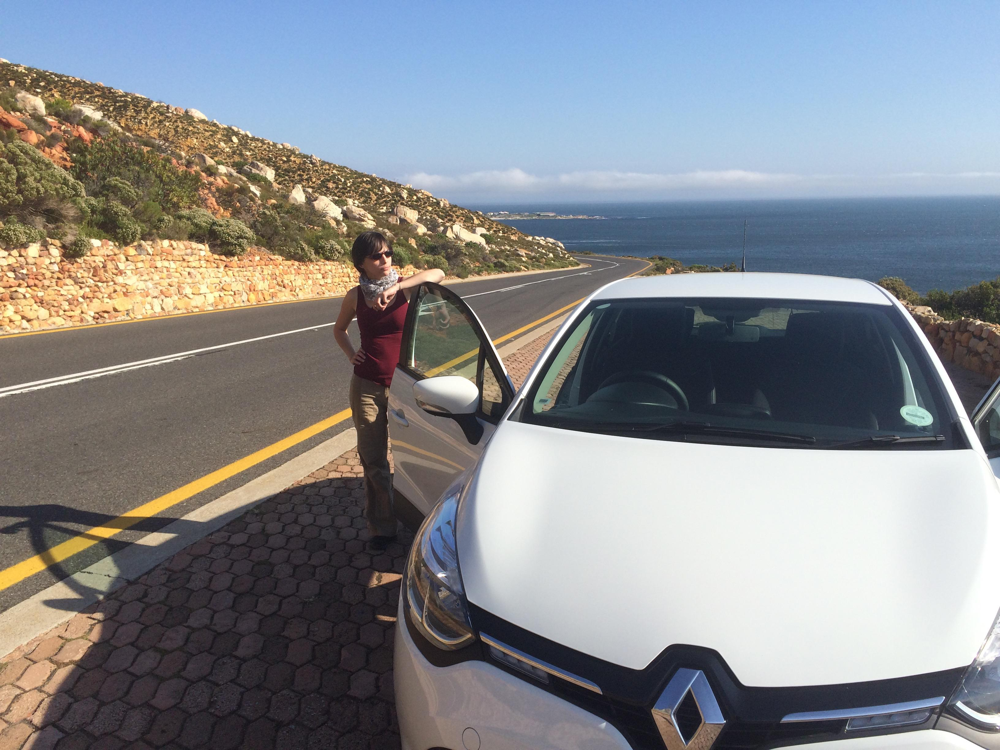

Hier die versprochenen zusätzlichen Bilder zum Pinguin-Tag. Ich wünsche viel Spaß beim Anschauen. :) Leider sind mir die Bilder ein bisschen durcheinander geraten, also bitte nicht auf die Chronologie achten. Danke.


Ältester Pinguin der Kolonie (22 Jahre)